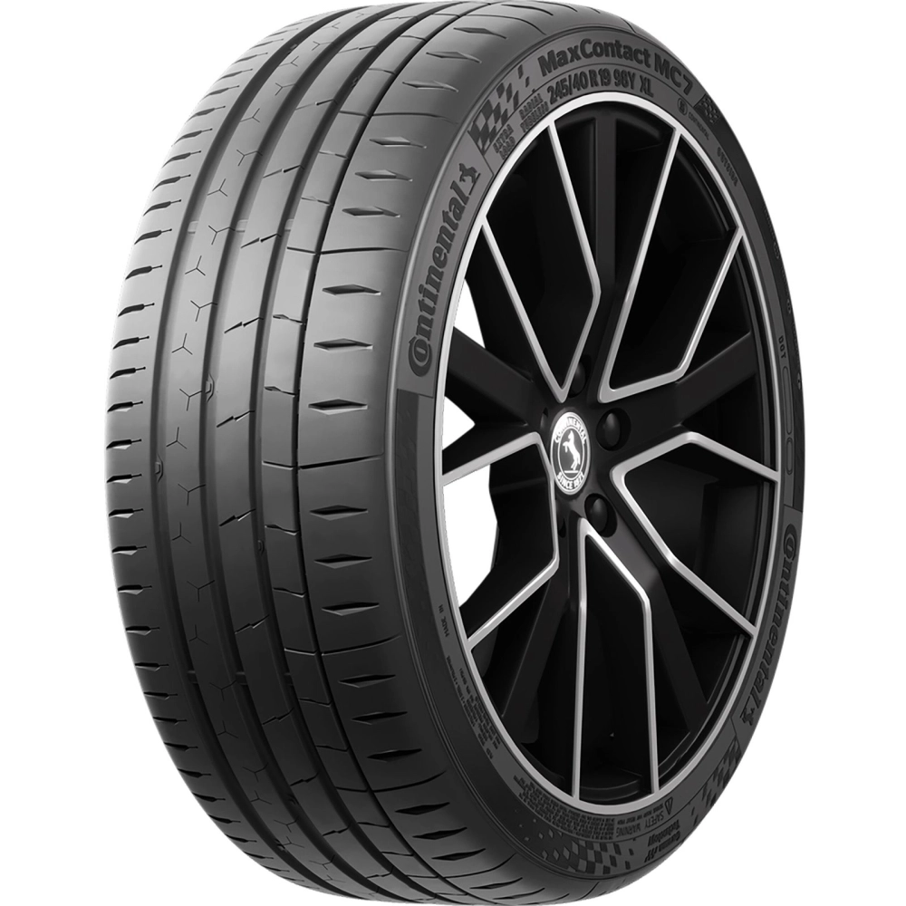

Continental MaxContact MC7 245/45R19

RM 750.00
The Continental MaxContact MC7 (245/45R19 102Y XL) is a sporty ultra-high-performance (UHP) tyre developed for Asia-Pacific roads to balance sharp handling with wet-weather safety and low cabin noise. Overview & Engineering Positioned between Continental’s comfort-focused UltraContact UC7 and track-oriented SportContact 7, the MC7 is built for drivers who want responsive daily performance in tropical heat and sudden downpours: • Cornering Macroblocks. Larger tread blocks on the outer shoulder widen the tyre's road footprint during hard turns, distributing cornering forces evenly for greater stability. • ReFlex Compound. A specialized silica-enhanced polymer blend increases stiffness to resist tyre deformation, delivering faster steering response and shorter braking distances on dry and wet roads. • 3D Laser-Cut Sipes. Multi-angled aqua, lightning, and star sipes slice through water films and expel water rapidly from the grooves to minimize aquaplaning. • Noise Breaker 3.0. Upgraded elements inside the tread grooves disrupt and scatter sound waves into smaller frequencies, preventing road noise from building up inside the cabin. • EV-Compatible. Reinforced construction supports the instant torque and heavier battery weight of electric and hybrid vehicles alongside standard petrol cars. Technical Breakdown (245/45R19 102Y XL) • 245: Section width of 245 mm from sidewall to sidewall. • 45: Aspect ratio (sidewall height is 45% of the width), offering a sporty, low-profile stance. • R19: Radial construction engineered for a 19-inch rim. • 102Y XL: Load index of 102 (up to 850 kg per tyre) with Extra Load (XL) reinforcement, paired with a Y speed rating (up to 300 km/h). • UTQG Ratings: Treadwear 360, Traction AA, Temperature A. (Note: Official details and full specifications can be viewed on the Continental Malaysia MaxContact MC7 page.)
Klang Hock Li Tyre Services Sdn Bhd, Klang, Selangor, Malaysia.
View live product details and enquire